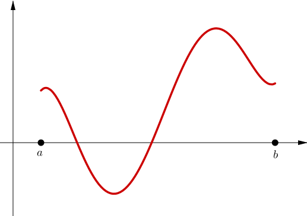
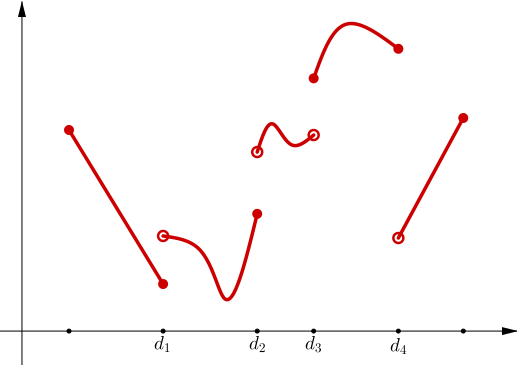
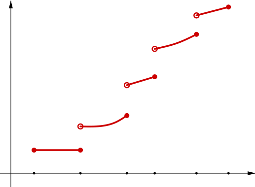

Summary Week 7
Partitions
Definition: A partition $P$ of the interval $[a,b]$ is a finite set of numbers $\{ x_0,x_1,x_2,\ldots,x_n \}$ such that \begin{equation*} a = x_0 \lt x_1 \lt x_2 \lt \cdots \lt x_{n-1} \lt x_n = b . \end{equation*} We write \begin{equation*} \Delta x_i := x_i - x_{i-1} . \end{equation*}
Lower and Upper Darboux sums
Definition: Let $f \colon [a,b] \to \R$ be a bounded function. Let $P$ be a partition of $[a,b]$. Define \begin{array}{cc} & m_i := \inf \, \bigl\{ f(x) : x_{i-1} \leq x \leq x_i \bigr\} , & M_i := \sup \, \bigl\{ f(x) : x_{i-1} \leq x \leq x_i \bigr\} , \\ & L(P,f) := \sum_{i=1}^n m_i \Delta x_i , & U(P,f) := \sum_{i=1}^n M_i \Delta x_i . \end{array} We call $L(P,f)$ the lower Darboux sum and $U(P,f)$ the upper Darboux sum.
Lower and Upper Darboux sums
Theorem: Let $f \colon [a,b] \to \R$ be a bounded function. Let $m, M \in \R$ be such that for all $x \in [a,b]$, we have $m \leq f(x) \leq M$. Then for every partition $P$ of $[a,b]$, \begin{equation} \label{sumulbound:eq} m(b-a) \leq L(P,f) \leq U(P,f) \leq M(b-a) . \end{equation}
Lower and Upper Darboux Integrals
Theorem: As the sets of lower and upper Darboux sums are bounded, we define \begin{align*} & \underline{\int_a^b} f(x)~dx := \sup \, \bigl\{ L(P,f) : P \text{ a partition of } [a,b] \bigr\} , \\ & \overline{\int_a^b} f(x)~dx := \inf \, \bigl\{ U(P,f) : P \text{ a partition of } [a,b] \bigr\} . \end{align*} We call $\underline{\int}$ the lower Darboux integral and $\overline{\int}$ the upper Darboux integral.
Lower and Upper Darboux Integrals
Theorem: Let $f \colon [a,b] \to \R$ be a bounded function. Let $m, M \in \R$ be such that for all $x \in [a,b]$, we have $m \leq f(x) \leq M$. Then \begin{equation} \label{intulbound:eq} m(b-a) \leq \underline{\int_a^b} f \leq \overline{\int_a^b} f \leq M(b-a) . \end{equation}
Definition: Let $f \colon [a,b] \to \R$ be a bounded function such that \begin{equation*} \underline{\int_a^b} f(x)~dx = \overline{\int_a^b} f(x)~dx . \end{equation*} Then $f$ is said to be Riemann integrable. The set of Riemann integrable functions on $[a,b]$ is denoted by $\mathcal R[a,b]$. When $f \in \mathcal R[a,b]$, we define \begin{equation*} \int_a^b f(x)~dx := \underline{\int_a^b} f(x)~dx = \overline{\int_a^b} f(x)~dx . \end{equation*} The number $\int_a^b f$ is called the Riemann integral of $f$, or sometimes simply the integral of $f$.
Theorem: Let $f \colon [a,b] \to \R$ be a Riemann integrable function. Let $m, M \in \R$ be such that $m \leq f(x) \leq M$ for all $x \in [a,b]$. Then \begin{equation*} m(b-a) \leq \int_a^b f \leq M(b-a) . \end{equation*}
Criterion for Riemann integrability
Theorem: Let $f \colon [a,b] \to \R$ be a bounded function. Then $f$ is Riemann integrable if for every $\epsilon > 0$, there exists a partition $P$ of $[a,b]$ such that \begin{equation*} U(P,f) - L(P,f) \lt \epsilon . \end{equation*}
Properties
Theorem: Let $f$ and $g$ be in $\mathcal R[a,b]$ and $\alpha \in \R$.
Continuous functions on closed intervals
|
Theorem: If $f \colon [a,b] \to \R$ is a continuous function, then $f \in \mathcal R[a,b]$. |
 |
Bounded functions with finitely many discontinuities
|
Theorem: Let $f \colon [a,b] \to \R$ be a bounded function with finitely many discontinuities. Then $f \in \mathcal R[a,b]$. |
 |
Monotone functions
|
Theorem: Let $f:[a,b]\ra \R$ be a monotone function. Then $f\in \mathcal R[a,b]$. |
 |